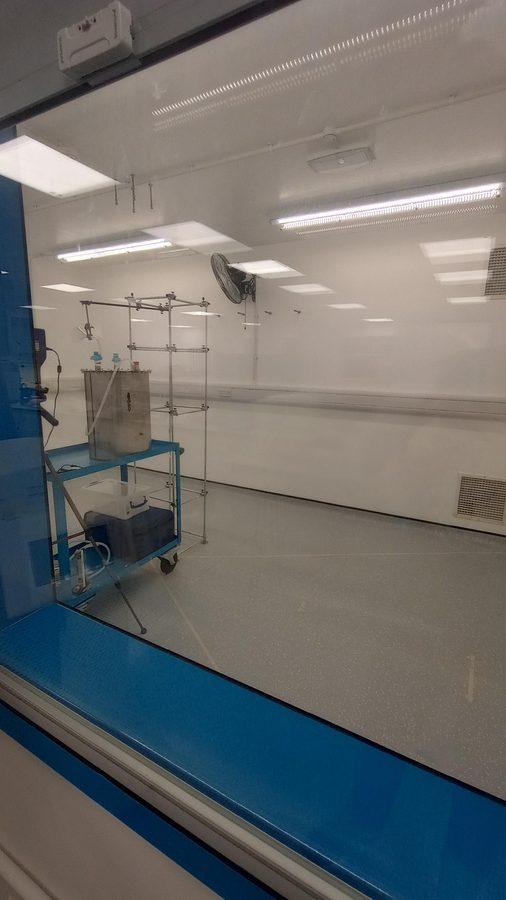

Research Overview
Lead Academics: Professor Catherine Noakes OBE FREng, Associate Professor Marco-Felipe King, Associate Professor Amirul Khan, Dr Louise Fletcher, and Dr Waseem Hiwar
Core Facilities: 32 m³ Controlled Walk-In Aerobiology Chamber & High-Performance CFD Computing
Major Programmes: HECOIRA, Class-ACT, PROTECT, TRACK, and EPSRC CDT in Future Fluid Dynamics
How air moves through a room determines how respiratory pathogens, particulate matter, and gaseous pollutants reach building occupants. Our Indoor Air & Healthy Buildings team combines high-resolution computational fluid dynamics (CFD) with full-scale microbiological trials in the UK's largest controlled walk-in aerobiology chamber.
By pairing physical tracer and bacteriophage aerosol experiments with Large Eddy Simulation (LES), RANS turbulence modelling, and Quantitative Microbial Risk Assessment (QMRA), we evaluate how room geometry, mechanical and natural ventilation, occupant movement, HEPA filtration, and germicidal UV-C (254 nm and 222 nm far-UVC) reduce infection risk without increasing building carbon emissions.

High-resolution CFD simulation of indoor airflow and aerosol dispersion
Facilities & Modelling Gallery



Explore Our Indoor Air Research
Learn more about our hospital infection modelling, school air-quality trials, and testing facilities.